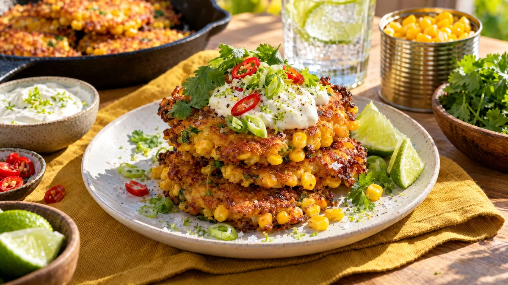

RESTFEST · RECEPTHuvudrätt · Mingelmat & tilltugg · Frukost & brunch
Krispiga majsplättar med limecrème och koriander
En burk majs, två ägg och lite mjöl. Smeten steks till små gyllene plättar, så fulla av majskorn att de knastrar i pannan, och toppas med syrlig limecrème, koriander, salladslök och färsk chili. Lika bra till brunch som till mingel eller en lätt vardagsmiddag.
- Förberedelse
- 10 min
- Tillagning
- 15 min
- Portioner
- 4 (ca 12 plättar)
- Nivå
- Nybörjare
 Det här behöver du
Det här behöver du
JÄMFÖRT MED DIN KYL
Tryck på + vid det du behöver köpa.
Limecrème
Majsplättar
Till servering
Gör så här
- Rör ihop crème fraiche, limeskal, limesaft och salt. Ställ kallt.
- Låt majsen rinna av ordentligt och klappa den torr med hushållspapper. Torr majs ger krispigare plättar.
- Vispa ihop ägg, mjölk, mjöl, bakpulver, spiskummin, paprikapulver och salt till en tjock smet. Skiva salladslöken tunt och vänd ner den tillsammans med majsen.
- Hetta upp ett tunt lager olja i en stekpanna på medelhög värme. Klicka ut smeten, ca 2 msk per plätt, och platta till dem lätt med skeden.
- Stek plättarna 2–3 minuter per sida, tills de är gyllenbruna och krispiga i kanterna. Låt dem rinna av på hushållspapper och håll dem varma i ugnen på 100 grader medan du steker resten.
Dekoration och servering
- Stapla 3 plättar lätt förskjutet på varje tallrik och lägg en klick limecrème överst.
- Toppa med koriander, salladslök, chili och några flingsaltkorn.
- Servera med limeklyftor.
- Gör plättarna mindre, ca 1 msk smet var, så blir de perfekt mingelmat på ett fat.
- Gott till brunch med ett stekt ägg eller några skivor krispigt bacon.
Mått och ugnstemperaturer
Måtten är svenska (dl, msk, tsk, krm). Ugnstemperaturerna gäller vanlig ugn med över- och undervärme; med varmluft, sänk med 20 grader.